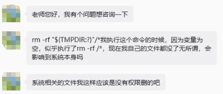
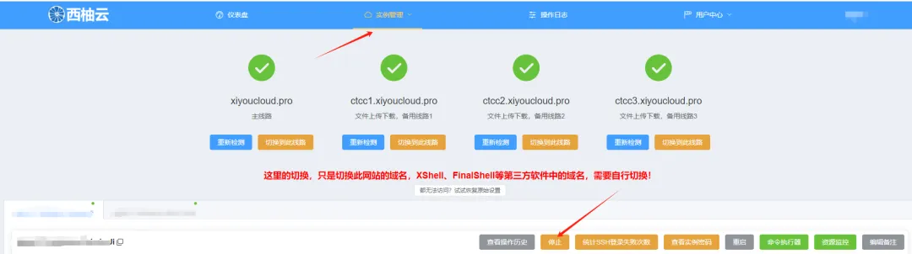
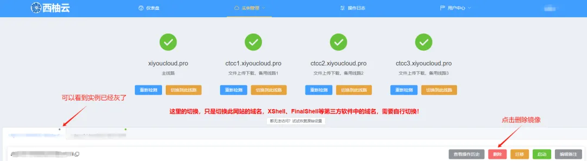

删库跑路命令也可以随便玩
原文：https://mp.weixin.qq.com/s?__biz=MzAwMzIzOTk5OQ==&mid=2247538845&idx=1&sn=7b2285d8cc38fa01a3d26592de87582a&chksm=9b3c21cdac4ba8dbff54954d4ddd180625120f5ce8f9cf7ea65221465803b8c05c6a3d042871#rd 合集：服务器

一、系统玩崩了
有用户表示自己不小心执行了rm -rf /*，导致系统崩溃了(这不是传说中的删库跑路命令吗)。其实我们赋予大家root权限的时候就已经做好了几手准备，删库跑路命令也可以放心随便玩：1、每个用户的系统是独立的，即使你删除了系统目录，也不会影响其它用户的操作。所以，我们在保证每个用户拥有最大自由度的同时，还能给大家提供满满的安全感。2、西柚云控制台可以直接一键重置系统。3、西柚云服务器有天级快照，可以进行“时空穿梭”，不用担心文件会丢。

不过，还是提醒大家，学好Linux，打好基础，才能够快乐的玩耍：十小时学会LinuxB站同步播出，连播更方便，文末阅读原文可直达：https://www.bilibili.com/video/BV1hT411F7r7
二、重置系统
第一步，中止实例的运行

第二步，删除实例

第三步，去镜像市场重新布置新实例
仪表台的使用大家可以扫文末客服微信二维码获取大禹系统使用手册。布置后的实例仍能保留原有环境中硬盘存贮的文件，只是系统配置文件被刷新。从下图可以看到，系统已经可以正常使用root权限啦。所以，大家放心大胆的玩Linux吧！
你值得拥有
短平快，配置与价格见下图，详细介绍见入手足够完成硕博生涯的生信环境、独享用户连技术支持都是独享的、RTX5090、4080S、5070显卡上机。随时滴滴微信号[Biomamba_zhushou]咨询获取教程,也欢迎注册试用：https://biomamba.xiyoucloud.net/


如何联系我们

 留一个领取资料、开箱即用的单细胞分析镜像的微信号[Biomamba_zhushou]，方便各位随时交流。同时我们也构建了交流群矩阵，欢迎大家入群讨论。
大家可以阅读完这几篇之后添加给生信入门初学者的小贴士
如何搜索公众号过往发布内容
留一个领取资料、开箱即用的单细胞分析镜像的微信号[Biomamba_zhushou]，方便各位随时交流。同时我们也构建了交流群矩阵，欢迎大家入群讨论。
大家可以阅读完这几篇之后添加给生信入门初学者的小贴士
如何搜索公众号过往发布内容
已有生信基地联系方式的同学无需重复添加

 您点的每个赞和在看，我都认真当成了喜欢
您点的每个赞和在看，我都认真当成了喜欢